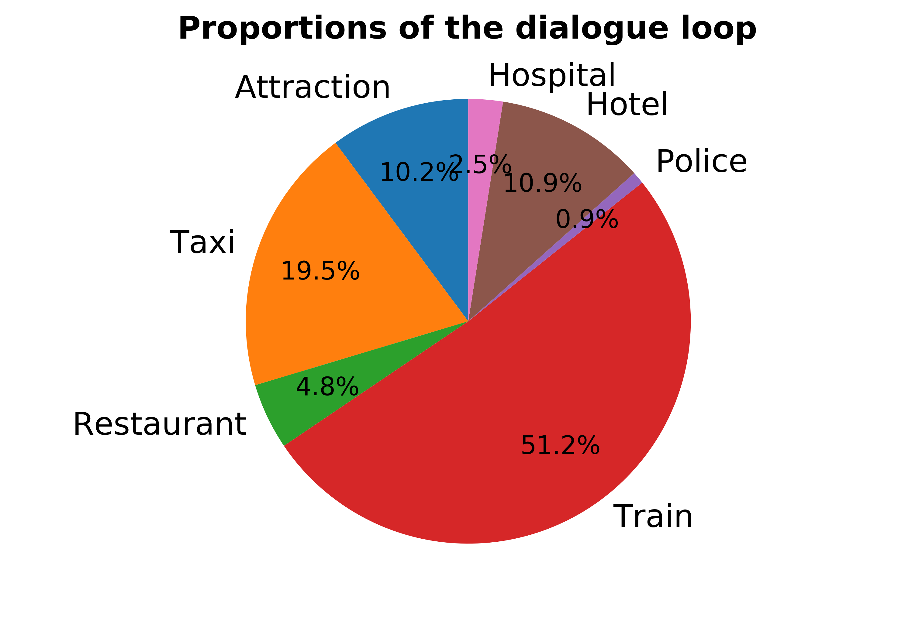

Test Report
Model Name: DAMD
Dataset: multiwoz
Time: 2020-04-26 13:13:21
Overall Results
Success Rate: 33.6 %
(Precision, Recall, F1) : (0.621, 0.607, 0.574)
Average Dialog Turn (Succ): 10.440
Average Dialog Turn (All): 28.206
Metric
| | Total Num | Succ Rate | Precision | Recall | F1 | Dialog Loop Failed Rate | Dialog Turn (Succ) | Dialog Turn (All) |
|---|
| hotel | 329 | 0.587 | 0.566 | 0.668 | 0.597 | 0.185 | 6.093 | 9.909 |
| attraction | 289 | 0.716 | 0.746 | 0.802 | 0.754 | 0.197 | 6.251 | 12.097 |
| restaurant | 381 | 0.921 | 0.693 | 0.832 | 0.737 | 0.071 | 5.516 | 7.507 |
| taxi | 129 | 0.140 | 0.537 | 0.341 | 0.406 | 0.845 | 10.889 | 26.388 |
| train | 373 | 0.214 | 0.293 | 0.321 | 0.272 | 0.769 | 18.150 | 32.048 |
| police | 23 | 0.783 | 0.783 | 0.783 | 0.783 | 0.217 | 3.556 | 11.478 |
| hospital | 30 | 0.533 | 0.533 | 0.533 | 0.533 | 0.467 | 7.250 | 22.533 |
Dialogue Loop
Domain hotel
Overall Results
Success Rate: 58.7 %
(Precision, Recall, F1) : (0.566, 0.668, 0.597)
Average Dialog Turn (Succ): 6.093
Average Dialog Turn (All): 9.909
System NLU Failed Dialog Act:Nothing
User NLU Failed Dialog Act:Nothing
Dialog Loop- Request-Hotel-Addr-? Occur Num: 7
- Request-Hotel-Internet-? Occur Num: 7
- Inform-Hotel-Stay-2 Occur Num: 4
- Inform-Hotel-Stay-4 Occur Num: 4
- Inform-Hotel-Area-centre Occur Num: 4
- Inform-Hotel-Area-dontcare Occur Num: 3
- Inform-Hotel-Stay-6 Occur Num: 3
- Request-Hotel-Type-? Occur Num: 3
- Inform-Hotel-People-4 Occur Num: 2
- Inform-Hotel-Area-north Occur Num: 2
Bad Inform Dialog Act- inform-hotel-parking Occur Num: 26
- inform-hotel-internet Occur Num: 25
- recommend-hotel-internet Occur Num: 2
- inform-hotel-pricerange Occur Num: 2
- inform-hotel-stars Occur Num: 1
Request But Not Inform Dialog Act- request-hotel-address Occur Num: 19
- request-hotel-internet Occur Num: 17
- request-hotel-parking Occur Num: 17
- request-hotel-postcode Occur Num: 13
- request-hotel-phone Occur Num: 6
- request-hotel-stars Occur Num: 3
- request-hotel-type Occur Num: 3
- request-hotel-pricerange Occur Num: 2
- request-hotel-area Occur Num: 2
Inform But Not Request Dialog Act- inform-hotel-area Occur Num: 46
- inform-hotel-type Occur Num: 46
- inform-hotel-phone Occur Num: 24
- inform-hotel-stars Occur Num: 9
Domain attraction
Overall Results
Success Rate: 71.6 %
(Precision, Recall, F1) : (0.746, 0.802, 0.754)
Average Dialog Turn (Succ): 6.251
Average Dialog Turn (All): 12.097
System NLU Failed Dialog Act:Nothing
User NLU Failed Dialog Act:Nothing
Dialog Loop- Request-Attraction-Fee-? Occur Num: 40
- Request-Attraction-Addr-? Occur Num: 6
- Request-Attraction-Post-? Occur Num: 5
- Request-Attraction-Phone-? Occur Num: 2
- Inform-Attraction-Name-saint john's college Occur Num: 1
- Inform-Attraction-Name-the cambridge punter Occur Num: 1
- Inform-Attraction-Area-centre Occur Num: 1
- Request-Attraction-Area-? Occur Num: 1
Bad Inform Dialog ActNothing
Request But Not Inform Dialog Act- request-attraction-entrance fee Occur Num: 49
- request-attraction-address Occur Num: 32
- request-attraction-postcode Occur Num: 20
- request-attraction-phone Occur Num: 18
- request-attraction-type Occur Num: 5
- request-attraction-area Occur Num: 3
Inform But Not Request Dialog Act- inform-attraction-area Occur Num: 63
- inform-attraction-phone Occur Num: 31
- inform-attraction-type Occur Num: 18
Domain restaurant
Overall Results
Success Rate: 92.1 %
(Precision, Recall, F1) : (0.693, 0.832, 0.737)
Average Dialog Turn (Succ): 5.516
Average Dialog Turn (All): 7.507
System NLU Failed Dialog Act:Nothing
User NLU Failed Dialog Act:Nothing
Dialog Loop- Request-Restaurant-Addr-? Occur Num: 6
- Request-Restaurant-Post-? Occur Num: 5
- Request-Restaurant-Phone-? Occur Num: 4
- Inform-Restaurant-Food-dontcare Occur Num: 2
- Request-Restaurant-Price-? Occur Num: 2
- Inform-Restaurant-Day-sunday Occur Num: 1
- Inform-Restaurant-Time-11:30 Occur Num: 1
- Inform-Restaurant-Time-14:30 Occur Num: 1
- Inform-Restaurant-Time-17:45 Occur Num: 1
- Inform-Restaurant-Day-wednesday Occur Num: 1
Bad Inform Dialog Act- inform-restaurant-pricerange Occur Num: 1
Request But Not Inform Dialog Act- request-restaurant-address Occur Num: 13
- request-restaurant-postcode Occur Num: 4
- request-restaurant-pricerange Occur Num: 3
- request-restaurant-phone Occur Num: 1
Inform But Not Request Dialog Act- inform-restaurant-food Occur Num: 74
- inform-restaurant-area Occur Num: 59
- inform-restaurant-phone Occur Num: 20
Domain taxi
Overall Results
Success Rate: 14.0 %
(Precision, Recall, F1) : (0.537, 0.341, 0.406)
Average Dialog Turn (Succ): 10.889
Average Dialog Turn (All): 26.388
System NLU Failed Dialog Act:Nothing
User NLU Failed Dialog Act:Nothing
Dialog Loop- Request-Taxi-Car-? Occur Num: 108
- Inform-Taxi-Dest-96 barton road Occur Num: 1
Bad Inform Dialog Act- inform-taxi-phone Occur Num: 1
Request But Not Inform Dialog Act- request-taxi-car type Occur Num: 110
- request-taxi-phone Occur Num: 60
Inform But Not Request Dialog ActNothing
Domain train
Overall Results
Success Rate: 21.4 %
(Precision, Recall, F1) : (0.293, 0.321, 0.272)
Average Dialog Turn (Succ): 18.150
Average Dialog Turn (All): 32.048
System NLU Failed Dialog Act:Nothing
User NLU Failed Dialog Act:Nothing
Dialog Loop- Request-Train-Time-? Occur Num: 42
- Request-Train-Ticket-? Occur Num: 26
- Request-Train-Id-? Occur Num: 17
- Request-Train-Arrive-? Occur Num: 6
- Inform-Train-Arrive-09:15 Occur Num: 6
- Inform-Train-Leave-12:15 Occur Num: 6
- Inform-Train-Leave-08:15 Occur Num: 5
- Request-Train-Leave-? Occur Num: 5
- Inform-Train-Arrive-20:30 Occur Num: 4
- Inform-Train-People-1 Occur Num: 4
Bad Inform Dialog Act- inform-train-arriveBy Occur Num: 95
- inform-train-leaveAt Occur Num: 9
- offerbook-train-arriveBy Occur Num: 1
- offerbook-train-leaveAt Occur Num: 1
Request But Not Inform Dialog Act- request-train-duration Occur Num: 130
- request-train-price Occur Num: 118
- request-train-trainID Occur Num: 39
- request-train-leaveAt Occur Num: 21
- request-train-arriveBy Occur Num: 17
Inform But Not Request Dialog ActNothing
Domain police
Overall Results
Success Rate: 78.3 %
(Precision, Recall, F1) : (0.783, 0.783, 0.783)
Average Dialog Turn (Succ): 3.556
Average Dialog Turn (All): 11.478
System NLU Failed Dialog Act:Nothing
User NLU Failed Dialog Act:Nothing
Dialog Loop- Request-Police-Phone-? Occur Num: 5
Bad Inform Dialog ActNothing
Request But Not Inform Dialog Act- request-police-phone Occur Num: 5
Inform But Not Request Dialog ActNothing
Domain hospital
Overall Results
Success Rate: 53.3 %
(Precision, Recall, F1) : (0.533, 0.533, 0.533)
Average Dialog Turn (Succ): 7.250
Average Dialog Turn (All): 22.533
System NLU Failed Dialog Act:Nothing
User NLU Failed Dialog Act:Nothing
Dialog Loop- Request-Hospital-Phone-? Occur Num: 14
Bad Inform Dialog ActNothing
Request But Not Inform Dialog Act- request-hospital-phone Occur Num: 14
Inform But Not Request Dialog ActNothing